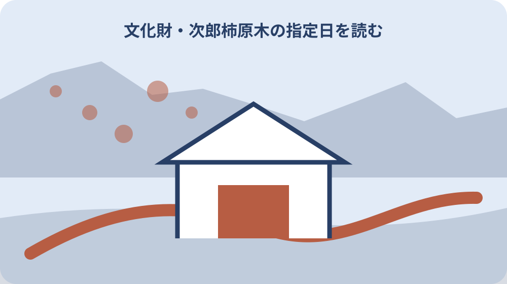
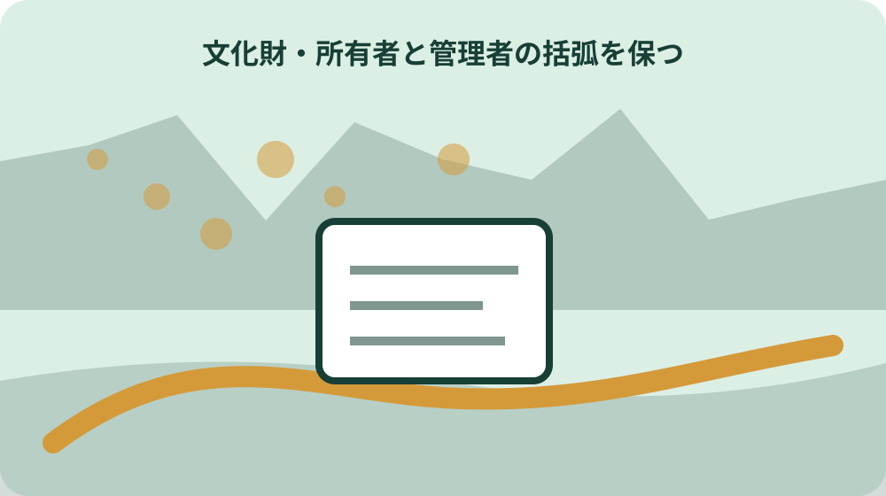

先に結論を確認する
この記事の答え：名称だけではなく、森町公式一覧の区分欄と国のデータベースを照合します。
森町で最初に照合する条件：指定主体、種別、正式名称、所在地、指定日を一件一行で記す
国指定と県指定の見出しを分ける
国指定と県指定の見出しを分けるに関して、森町公式の「歴史」ページは2024年9月2日更新で、社会教育課文化振興係の所在地を森92-1、電話番号を0538-85-1114と案内する。国指定と県指定の見出しを分けるを確認する際、国指定と県指定の見出しを分けるときは、公式資料の表記をそのまま控え、似た名称や数字を家族の記憶だけで同一と決めません。国指定と県指定の見出しを分けるの記録では、資料名と確認日も添えると、後日の更新と区別できます。
国指定と県指定の見出しを分けるを確認する際、県指定欄には工芸、絵画書跡、天然記念物、建造物、民俗がある。国指定と県指定の見出しを分けるの記録では、この情報を国指定と県指定の見出しを分ける資料へ移す場合は、対象、日付、場所、名義など本文で確認できる項目だけを書きます。国指定と県指定の見出しを分けるを家族へ伝える前に、分からない欄は空白で消さず、確認先を付けた未確認欄として残します。
国指定と県指定の見出しを分けるの記録では、森町へ国指定と県指定の見出しを分ける内容を尋ねる前に、手元の資料で一致した点と一致しない点を二列にします。国指定と県指定の見出しを分けるを家族へ伝える前に、「森町公式の「歴史」ページは2024年9月2日更新で、社会教育課文化振興係の所在地を森92-1、電話番号を0538-85-1114と案内する」という案内のどこを読んだかを示せば、今回の対象に合う回答を得やすくなります。
国指定と県指定の見出しを分けるを家族へ伝える前に、国指定と県指定の見出しを分ける結果には、回答日、担当窓口、参照資料、次に必要な行動を記録します。国指定と県指定の見出しを分けるの見直しでは、本人の意思や家族の予定は公的事実と別欄に置き、町の案内のように見える書き方を避けます。
国指定と県指定の見出しを分けるの見直しでは、国指定と県指定の見出しを分ける記録を家族へ渡す際は、採用した資料だけでなく未確認事項も共有します。国指定と県指定の見出しを分けるに関して、県指定欄には工芸、絵画書跡、天然記念物、建造物、民俗があるという条件が変わった場合も、どの行から見直せばよいか判断できます。
種類と指定物件名を別欄にする
種類と指定物件名を別欄にするに関して、国指定欄には種類、指定物件、所有者または管理者、所在地、指定日がある。種類と指定物件名を別欄にするを確認する際、種類と指定物件名を別欄にするときは、公式資料の表記をそのまま控え、似た名称や数字を家族の記憶だけで同一と決めません。種類と指定物件名を別欄にするの記録では、資料名と確認日も添えると、後日の更新と区別できます。
種類と指定物件名を別欄にするを確認する際、次郎柿原木は県指定天然記念物として掲載される。種類と指定物件名を別欄にするの記録では、この情報を種類と指定物件名を別欄にする資料へ移す場合は、対象、日付、場所、名義など本文で確認できる項目だけを書きます。種類と指定物件名を別欄にするを家族へ伝える前に、分からない欄は空白で消さず、確認先を付けた未確認欄として残します。
種類と指定物件名を別欄にするの記録では、森町へ種類と指定物件名を別欄にする内容を尋ねる前に、手元の資料で一致した点と一致しない点を二列にします。種類と指定物件名を別欄にするを家族へ伝える前に、「国指定欄には種類、指定物件、所有者または管理者、所在地、指定日がある」という案内のどこを読んだかを示せば、今回の対象に合う回答を得やすくなります。
種類と指定物件名を別欄にするを家族へ伝える前に、種類と指定物件名を別欄にする結果には、回答日、担当窓口、参照資料、次に必要な行動を記録します。種類と指定物件名を別欄にするの見直しでは、本人の意思や家族の予定は公的事実と別欄に置き、町の案内のように見える書き方を避けます。
種類と指定物件名を別欄にするの見直しでは、種類と指定物件名を別欄にする記録を家族へ渡す際は、採用した資料だけでなく未確認事項も共有します。種類と指定物件名を別欄にするに関して、次郎柿原木は県指定天然記念物として掲載されるという条件が変わった場合も、どの行から見直せばよいか判断できます。
三社の舞楽を三行で記録する
三社の舞楽を三行で記録するに関して、友田家住宅は国指定の建造物として掲載される。三社の舞楽を三行で記録するを確認する際、三社の舞楽を三行で記録するときは、公式資料の表記をそのまま控え、似た名称や数字を家族の記憶だけで同一と決めません。三社の舞楽を三行で記録するの記録では、資料名と確認日も添えると、後日の更新と区別できます。
三社の舞楽を三行で記録するを確認する際、次郎柿原木の指定日は昭和19年3月31日である。三社の舞楽を三行で記録するの記録では、この情報を三社の舞楽を三行で記録する資料へ移す場合は、対象、日付、場所、名義など本文で確認できる項目だけを書きます。三社の舞楽を三行で記録するを家族へ伝える前に、分からない欄は空白で消さず、確認先を付けた未確認欄として残します。
三社の舞楽を三行で記録するの記録では、森町へ三社の舞楽を三行で記録する内容を尋ねる前に、手元の資料で一致した点と一致しない点を二列にします。三社の舞楽を三行で記録するを家族へ伝える前に、「友田家住宅は国指定の建造物として掲載される」という案内のどこを読んだかを示せば、今回の対象に合う回答を得やすくなります。
三社の舞楽を三行で記録するを家族へ伝える前に、三社の舞楽を三行で記録する結果には、回答日、担当窓口、参照資料、次に必要な行動を記録します。三社の舞楽を三行で記録するの見直しでは、本人の意思や家族の予定は公的事実と別欄に置き、町の案内のように見える書き方を避けます。
三社の舞楽を三行で記録するの見直しでは、三社の舞楽を三行で記録する記録を家族へ渡す際は、採用した資料だけでなく未確認事項も共有します。三社の舞楽を三行で記録するに関して、次郎柿原木の指定日は昭和19年3月31日であるという条件が変わった場合も、どの行から見直せばよいか判断できます。

友田家の二つの住宅を区別する
友田家の二つの住宅を区別するに関して、遠江森町の舞楽は国指定の民俗として掲載される。友田家の二つの住宅を区別するを確認する際、友田家の二つの住宅を区別するときは、公式資料の表記をそのまま控え、似た名称や数字を家族の記憶だけで同一と決めません。友田家の二つの住宅を区別するの記録では、資料名と確認日も添えると、後日の更新と区別できます。
友田家の二つの住宅を区別するを確認する際、天宮神社本殿及び拝殿は県指定建造物として掲載される。友田家の二つの住宅を区別するの記録では、この情報を友田家の二つの住宅を区別する資料へ移す場合は、対象、日付、場所、名義など本文で確認できる項目だけを書きます。友田家の二つの住宅を区別するを家族へ伝える前に、分からない欄は空白で消さず、確認先を付けた未確認欄として残します。
友田家の二つの住宅を区別するの記録では、森町へ友田家の二つの住宅を区別する内容を尋ねる前に、手元の資料で一致した点と一致しない点を二列にします。友田家の二つの住宅を区別するを家族へ伝える前に、「遠江森町の舞楽は国指定の民俗として掲載される」という案内のどこを読んだかを示せば、今回の対象に合う回答を得やすくなります。
友田家の二つの住宅を区別するを家族へ伝える前に、友田家の二つの住宅を区別する結果には、回答日、担当窓口、参照資料、次に必要な行動を記録します。友田家の二つの住宅を区別するの見直しでは、本人の意思や家族の予定は公的事実と別欄に置き、町の案内のように見える書き方を避けます。
友田家の二つの住宅を区別するの見直しでは、友田家の二つの住宅を区別する記録を家族へ渡す際は、採用した資料だけでなく未確認事項も共有します。友田家の二つの住宅を区別するに関して、天宮神社本殿及び拝殿は県指定建造物として掲載されるという条件が変わった場合も、どの行から見直せばよいか判断できます。
次郎柿原木の指定日を読む
次郎柿原木の指定日を読むに関して、小國神社十二段舞楽、天宮神社十二段舞楽、山名神社天王祭舞楽が同じ指定物件名の下に並ぶ。次郎柿原木の指定日を読むを確認する際、次郎柿原木の指定日を読むときは、公式資料の表記をそのまま控え、似た名称や数字を家族の記憶だけで同一と決めません。次郎柿原木の指定日を読むの記録では、資料名と確認日も添えると、後日の更新と区別できます。
次郎柿原木の指定日を読むを確認する際、友田家住宅と友田家隠居屋住宅は別の行である。次郎柿原木の指定日を読むの記録では、この情報を次郎柿原木の指定日を読む資料へ移す場合は、対象、日付、場所、名義など本文で確認できる項目だけを書きます。次郎柿原木の指定日を読むを家族へ伝える前に、分からない欄は空白で消さず、確認先を付けた未確認欄として残します。
次郎柿原木の指定日を読むの記録では、森町へ次郎柿原木の指定日を読む内容を尋ねる前に、手元の資料で一致した点と一致しない点を二列にします。次郎柿原木の指定日を読むを家族へ伝える前に、「小國神社十二段舞楽、天宮神社十二段舞楽、山名神社天王祭舞楽が同じ指定物件名の下に並ぶ」という案内のどこを読んだかを示せば、今回の対象に合う回答を得やすくなります。
所有者と管理者の括弧を保つ
所有者と管理者の括弧を保つに関して、県指定欄には工芸、絵画書跡、天然記念物、建造物、民俗がある。所有者と管理者の括弧を保つを確認する際、所有者と管理者の括弧を保つときは、公式資料の表記をそのまま控え、似た名称や数字を家族の記憶だけで同一と決めません。所有者と管理者の括弧を保つの記録では、資料名と確認日も添えると、後日の更新と区別できます。
所有者と管理者の括弧を保つを確認する際、森町公式ページの元資料表記は2001年の町政要覧別冊統計資料である。所有者と管理者の括弧を保つの記録では、この情報を所有者と管理者の括弧を保つ資料へ移す場合は、対象、日付、場所、名義など本文で確認できる項目だけを書きます。所有者と管理者の括弧を保つを家族へ伝える前に、分からない欄は空白で消さず、確認先を付けた未確認欄として残します。
所有者と管理者の括弧を保つの記録では、森町へ所有者と管理者の括弧を保つ内容を尋ねる前に、手元の資料で一致した点と一致しない点を二列にします。所有者と管理者の括弧を保つを家族へ伝える前に、「県指定欄には工芸、絵画書跡、天然記念物、建造物、民俗がある」という案内のどこを読んだかを示せば、今回の対象に合う回答を得やすくなります。
所在地を地区単位で照合する
所在地を地区単位で照合するに関して、次郎柿原木は県指定天然記念物として掲載される。所在地を地区単位で照合するを確認する際、所在地を地区単位で照合するときは、公式資料の表記をそのまま控え、似た名称や数字を家族の記憶だけで同一と決めません。所在地を地区単位で照合するの記録では、資料名と確認日も添えると、後日の更新と区別できます。
所在地を地区単位で照合するを確認する際、国指定文化財等データベースは文化財分類と種別を分けて検索できる。所在地を地区単位で照合するの記録では、この情報を所在地を地区単位で照合する資料へ移す場合は、対象、日付、場所、名義など本文で確認できる項目だけを書きます。所在地を地区単位で照合するを家族へ伝える前に、分からない欄は空白で消さず、確認先を付けた未確認欄として残します。
所在地を地区単位で照合するの記録では、森町へ所在地を地区単位で照合する内容を尋ねる前に、手元の資料で一致した点と一致しない点を二列にします。所在地を地区単位で照合するを家族へ伝える前に、「次郎柿原木は県指定天然記念物として掲載される」という案内のどこを読んだかを示せば、今回の対象に合う回答を得やすくなります。
指定日と更新日を分離する
指定日と更新日を分離するに関して、次郎柿原木の指定日は昭和19年3月31日である。指定日と更新日を分離するを確認する際、指定日と更新日を分離するときは、公式資料の表記をそのまま控え、似た名称や数字を家族の記憶だけで同一と決めません。指定日と更新日を分離するの記録では、資料名と確認日も添えると、後日の更新と区別できます。
指定日と更新日を分離するを確認する際、森町公式の「歴史」ページは2024年9月2日更新で、社会教育課文化振興係の所在地を森92-1、電話番号を0538-85-1114と案内する。指定日と更新日を分離するの記録では、この情報を指定日と更新日を分離する資料へ移す場合は、対象、日付、場所、名義など本文で確認できる項目だけを書きます。指定日と更新日を分離するを家族へ伝える前に、分からない欄は空白で消さず、確認先を付けた未確認欄として残します。
指定日と更新日を分離するの記録では、森町へ指定日と更新日を分離する内容を尋ねる前に、手元の資料で一致した点と一致しない点を二列にします。指定日と更新日を分離するを家族へ伝える前に、「次郎柿原木の指定日は昭和19年3月31日である」という案内のどこを読んだかを示せば、今回の対象に合う回答を得やすくなります。
元資料の年代を注記する
元資料の年代を注記するに関して、天宮神社本殿及び拝殿は県指定建造物として掲載される。元資料の年代を注記するを確認する際、元資料の年代を注記するときは、公式資料の表記をそのまま控え、似た名称や数字を家族の記憶だけで同一と決めません。元資料の年代を注記するの記録では、資料名と確認日も添えると、後日の更新と区別できます。
元資料の年代を注記するを確認する際、国指定欄には種類、指定物件、所有者または管理者、所在地、指定日がある。元資料の年代を注記するの記録では、この情報を元資料の年代を注記する資料へ移す場合は、対象、日付、場所、名義など本文で確認できる項目だけを書きます。元資料の年代を注記するを家族へ伝える前に、分からない欄は空白で消さず、確認先を付けた未確認欄として残します。
元資料の年代を注記するの記録では、森町へ元資料の年代を注記する内容を尋ねる前に、手元の資料で一致した点と一致しない点を二列にします。元資料の年代を注記するを家族へ伝える前に、「天宮神社本殿及び拝殿は県指定建造物として掲載される」という案内のどこを読んだかを示せば、今回の対象に合う回答を得やすくなります。

国データベースで分類を照合する
国データベースで分類を照合するに関して、友田家住宅と友田家隠居屋住宅は別の行である。国データベースで分類を照合するを確認する際、国データベースで分類を照合するときは、公式資料の表記をそのまま控え、似た名称や数字を家族の記憶だけで同一と決めません。国データベースで分類を照合するの記録では、資料名と確認日も添えると、後日の更新と区別できます。
国データベースで分類を照合するを確認する際、友田家住宅は国指定の建造物として掲載される。国データベースで分類を照合するの記録では、この情報を国データベースで分類を照合する資料へ移す場合は、対象、日付、場所、名義など本文で確認できる項目だけを書きます。国データベースで分類を照合するを家族へ伝える前に、分からない欄は空白で消さず、確認先を付けた未確認欄として残します。
国データベースで分類を照合するの記録では、森町へ国データベースで分類を照合する内容を尋ねる前に、手元の資料で一致した点と一致しない点を二列にします。国データベースで分類を照合するを家族へ伝える前に、「友田家住宅と友田家隠居屋住宅は別の行である」という案内のどこを読んだかを示せば、今回の対象に合う回答を得やすくなります。
大石の視点：指定範囲を現地で推測しない
大石の視点：指定範囲を現地で推測しないに関して、森町公式ページの元資料表記は2001年の町政要覧別冊統計資料である。大石の視点：指定範囲を現地で推測しないを確認する際、大石の視点：指定範囲を現地で推測しないときは、公式資料の表記をそのまま控え、似た名称や数字を家族の記憶だけで同一と決めません。大石の視点：指定範囲を現地で推測しないの記録では、資料名と確認日も添えると、後日の更新と区別できます。
大石の視点：指定範囲を現地で推測しないを確認する際、遠江森町の舞楽は国指定の民俗として掲載される。大石の視点：指定範囲を現地で推測しないの記録では、この情報を大石の視点：指定範囲を現地で推測しない資料へ移す場合は、対象、日付、場所、名義など本文で確認できる項目だけを書きます。大石の視点：指定範囲を現地で推測しないを家族へ伝える前に、分からない欄は空白で消さず、確認先を付けた未確認欄として残します。
大石の視点：指定範囲を現地で推測しないの記録では、森町へ大石の視点：指定範囲を現地で推測しない内容を尋ねる前に、手元の資料で一致した点と一致しない点を二列にします。大石の視点：指定範囲を現地で推測しないを家族へ伝える前に、「森町公式ページの元資料表記は2001年の町政要覧別冊統計資料である」という案内のどこを読んだかを示せば、今回の対象に合う回答を得やすくなります。
文化振興係への質問票を作る
文化振興係への質問票を作るに関して、国指定文化財等データベースは文化財分類と種別を分けて検索できる。文化振興係への質問票を作るを確認する際、文化振興係への質問票を作るときは、公式資料の表記をそのまま控え、似た名称や数字を家族の記憶だけで同一と決めません。文化振興係への質問票を作るの記録では、資料名と確認日も添えると、後日の更新と区別できます。
文化振興係への質問票を作るを確認する際、小國神社十二段舞楽、天宮神社十二段舞楽、山名神社天王祭舞楽が同じ指定物件名の下に並ぶ。文化振興係への質問票を作るの記録では、この情報を文化振興係への質問票を作る資料へ移す場合は、対象、日付、場所、名義など本文で確認できる項目だけを書きます。文化振興係への質問票を作るを家族へ伝える前に、分からない欄は空白で消さず、確認先を付けた未確認欄として残します。
文化振興係への質問票を作るの記録では、森町へ文化振興係への質問票を作る内容を尋ねる前に、手元の資料で一致した点と一致しない点を二列にします。文化振興係への質問票を作るを家族へ伝える前に、「国指定文化財等データベースは文化財分類と種別を分けて検索できる」という案内のどこを読んだかを示せば、今回の対象に合う回答を得やすくなります。